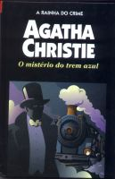

O Mistério do Trem Azul
The Mystery of the Blue Train
 Uma jovem encantadora, filha de um milionário, é estrangulada com um pedaço de cordão preto em sua cabina no luxuoso trem azul. A princípio o assassinato parece ter sido obra de um ladrão comum. Mas o detetive belga Hercule Poirot não acredita nesta hipótese e descobre que, entre os amigos da vítima, está um criminoso conhecido como “O marquês”. Seguindo esta única pista, Poirot tem que desvendar a identidade do assassino antes que o trem chegue na última estação.
Felipe Eduardo: Um estranho mistério: Todas as pessoas presentes no trem onde Mme. Kettering foi encontrada morta tinham motivos para assassiná-la. Porém, no trem também havia um passageiro especial: Hercule Poirot, que desvendará esse mistério graças à sua amiga Katherine Grey e às suas pequenas células cinzentas.